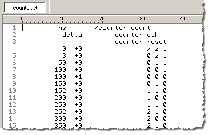
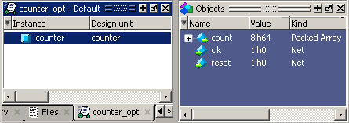

We use
the term “command-line mode” to refer to simulations that are run
from a DOS/ UNIX prompt without invoking the GUI. Several Questa SIM commands (for example, vsim,
vlib, vlog, and so on) are actually stand-alone executables that
can be invoked at the system command prompt. Additionally, you can
create a DO file that contains other Questa SIM commands
and specify that file when you invoke the simulator.
Procedure
- Create
a new directory and copy the tutorial files into it.
Start by
creating a new directory for this exercise. Create the directory
and copy the following files into it:
This lesson
uses the Verilog file counter.v.
If you have a VHDL license, use the counter.vhd and stim.do files
in the /<install_dir>/examples/tutorials/vhdl/automation directory
instead.
- Create
a new design library and compile the source file.
Again,
enter these commands at a DOS/ UNIX prompt in the new directory
you created in step 1.
- Type vlib
work at the DOS/ UNIX prompt.
- For Verilog,
type vlog counter.v at
the DOS/ UNIX prompt. For VHDL, type vcom counter.vhd.
- Create
a DO file.
- Open a
text editor.
- Type the
following lines into a new file:
# list all signals in decimal format
add list -decimal *
#change radix to symbolic
radix -symbolic
# read in stimulus
do stim.do
# output results
write list counter.lst
# quit the simulation
quit -f
- Save the
file with the name sim.do and place
it in the current directory.
- Optimize
the counter design unit.
- Enter the
following command at the DOS/UNIX prompt:
vopt +acc counter -o counter_opt
- Run the
command line mode simulation.
- Enter
the following command at the DOS/UNIX prompt:
vsim -c -do sim.do counter_opt -wlf counter_opt.wlf
The -c
argument instructs Questa SIM not
to invoke the GUI. The -wlf argument saves the simulation results
in a WLF file. This allows you to view the simulation results in
the GUI for debugging purposes.
- View the
list output.
- Open counter.lst and view
the simulation results. Output produced by the Verilog version of
the design should look like Figure 1:
Figure 1. Output of the Counter
The output
may appear slightly different if you used the VHDL version.
- View the
results in the GUI.
Since
you saved the simulation results, you can view them in the GUI by
invoking VSIM with the -view argument.
Note: Make
sure your PATH environment variable is set with the current version
of Questa SIM at the front
of the string.
- Type vsim
-view counter_opt.wlf at the prompt.
The GUI opens and a dataset tab named “counter_opt”
is displayed as in Figure 2. (Select in the
main menus if you do not see an Objects window.)
Figure 2. The counter_opt.wlf
Dataset in the Main Window Workspace
- Right-click
the counter instance and select Add Wave.
The waveforms
display in the Wave window.
- When you
finish viewing the results, select to close Questa SIM.